| 日付 | 2014年8月11日（月） - 2014年8月12日（火） |
|---|---|
| メンバー | 家族（妻、長女・3歳、長男・1歳） |
| アクセス | 車 |
2日目
本日は朝から雨が降っている。
昨日に引き続き電話で伊吹山の天気を問い合わせてみると、視界はあるとのこと。
とりあえず伊吹山に向かってみることにする。
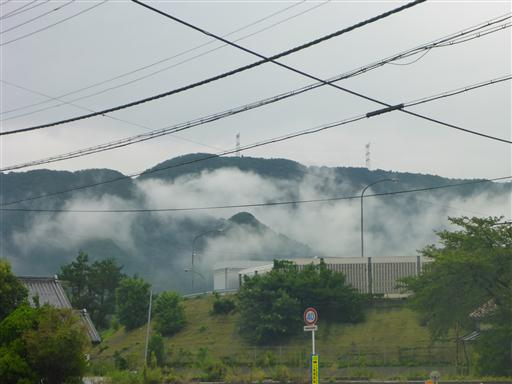
伊吹山ドライブウェイの入口まで行ったのだが、料金は何と3090円。
晴天ならいざ知らず、ダメもとで行くには高すぎる。
結局引き返して、近くにある関ヶ原鍾乳洞に行くことにする。
まだ朝早いからか、辺りは閑散としている。
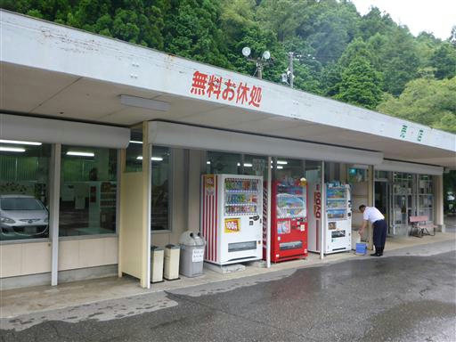
鍾乳洞の入口。
娘はトンネルが苦手なので、少々及び腰だ。
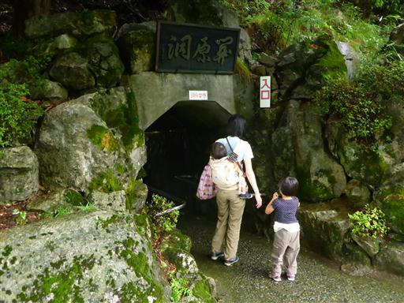
最初の方は壁も天井もコンクリート。
とても洞窟という感じがしない。

しばらく歩くと洞窟っぽくなってくる。
天井が低い場所は腰をかがめないと進めない。
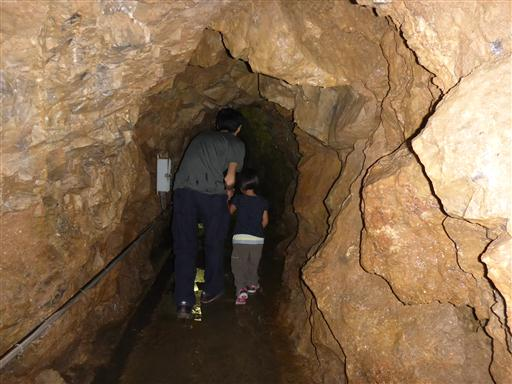
石筍。水滴が落下し続け、長い年月をかけて成長していく。
サイズはかなり小さめだ。
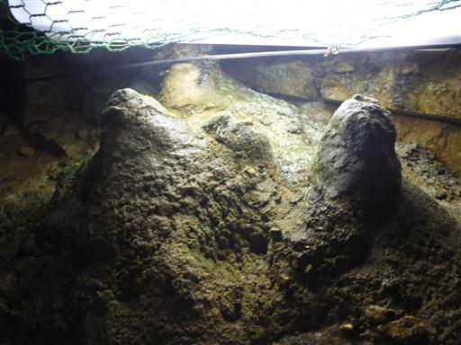
洞窟内は水が流れている場所が多く、水の音がよく聞こえる。
水の流れが広くなったところに橋が架けられている。
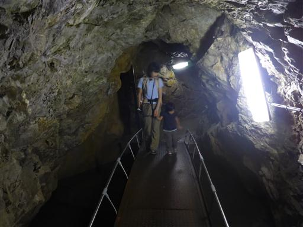
玉華殿。洞窟内最大である長さ2mの鍾乳石だ。
この辺りが一番見ごたえのある部分だ。
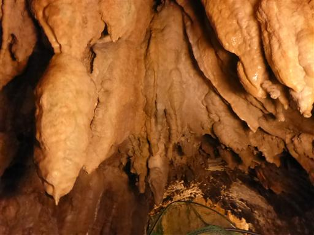
変わった形の石も突き出ている。
見事な鍾乳石なのだが、目の細かいネットが張られているので、観賞しにくい。
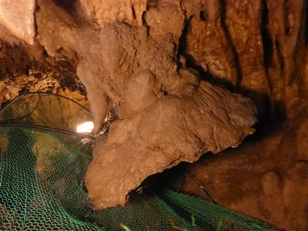
巨人の足。確かに足の形に似ている。
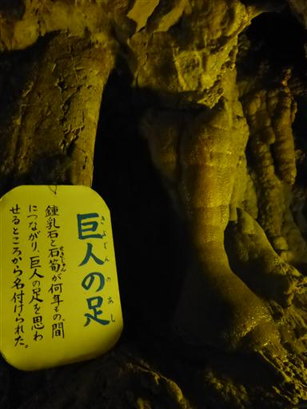
洞窟の出口付近の川には魚が泳いでいるらしいので、探してみる。
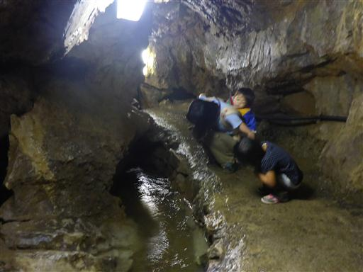
泳いでいるのはニジマス。あちらこちらで見られる。
サイズも大きいので、魚を見つけるのが苦手な娘も、容易に認識できる。
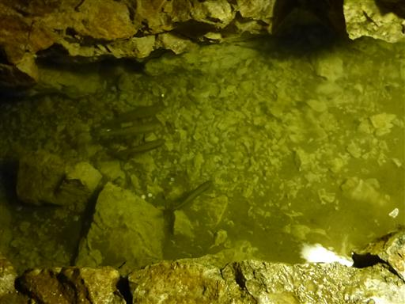
最後は娘がトイレに行きたくなったので、走って洞窟を脱出。
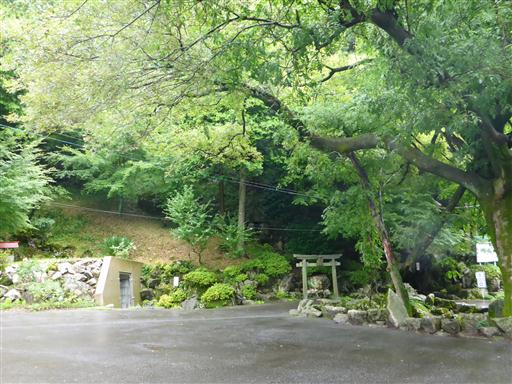
洞窟内を流れていた水は、地上に出てきて川になっている。
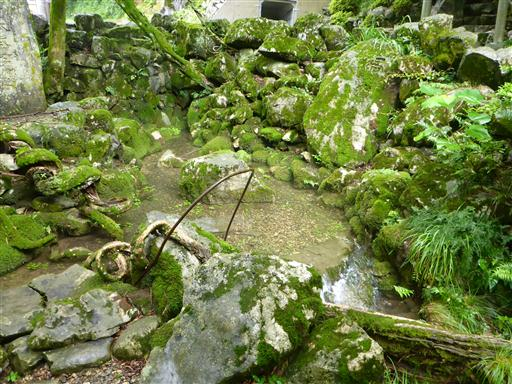
洞窟の案内図。ぐるりと一周できるようになっている。
引き返さなくてよいので観光には便利だ。
小規模な鍾乳洞だったが、なかなか面白かった。
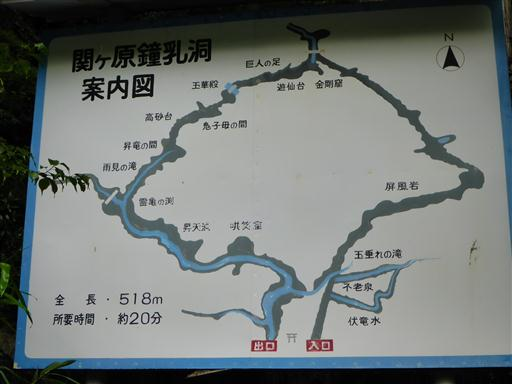
続いて養老の滝に行く。
同名の居酒屋があるからか、知名度は非常に高い滝だ。
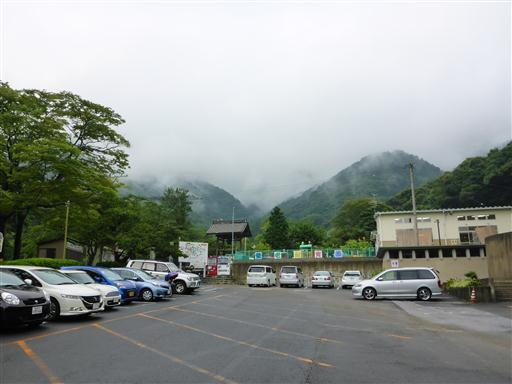
駐車場からは長い坂道を20～30分登る必要がある。
渓谷沿いの気持ちの良い道を歩いていく。
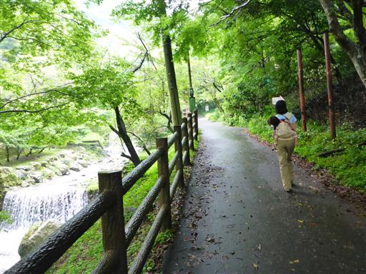
滝に近づくと、川の流れが激しくなってくる。
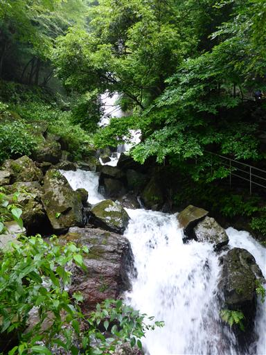
養老の滝に到着。シンプルな形だが、それなりに迫力がある。落差は32m。
先日の台風で水量が増えているのだろう。
昼食にウナギを食べて、実家に向かう。
散々な天気の夏休みだったが、いくらかの観光をすることができた。
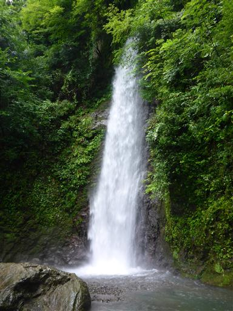